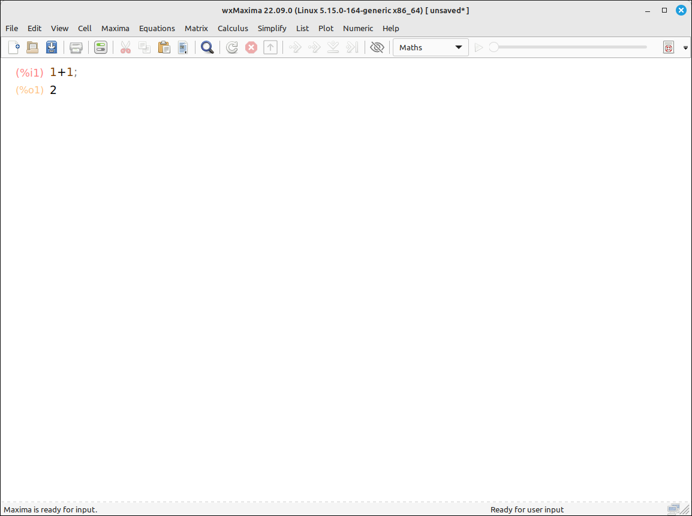
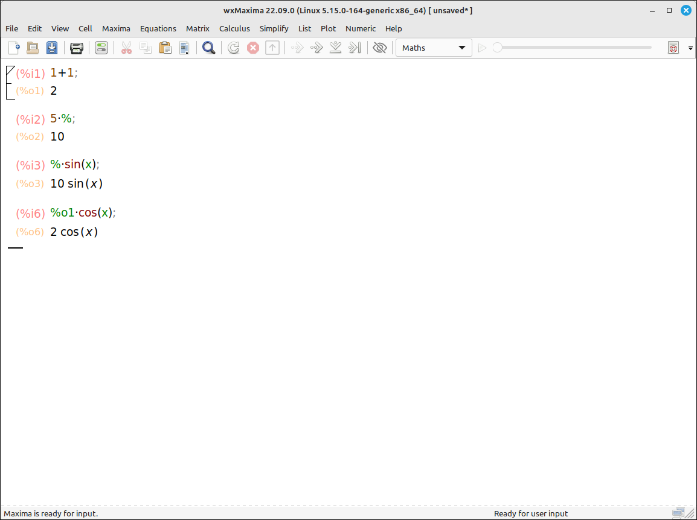

Maxima General Use#
Entering Expressions#
To enter something into the workspace simply type it into the input cell. As an easy example we typed in 1+1 and then pressed Shift+Enter (note that this is Shift+Enter and not Enter). Just hitting Enter will take you to the next line (for a multi-line input). When you hit Shift+Enter wxMaxima will take the input, send it to Maxima to do the work, when Maxima is done it will send the result back to wxMaxima and then be displayed on the screen. If your keyboard has a number pad then the Enter on the number pad is equivalent to Shift+Enter. Also note that we did not type in the ;.

Maxima Layout#
Note that wxMaxima labels the input and output as %i1 and %o1 respectively. These can be used in the formulas for subsequent inputs.
(%i1) 1+1;
(%o1) 2
Also, the % is a shorthand for the last output. So if we put in a couple more inputs,

Maxima Layout with Expressions#
So for the second input we typed in 5*% and it replaced the % by the last output of 2. Similarly, for the third input we typed in %*sin(x). In the input %o1*cos(x) we used the complete name of the first output which was replaced by 2. Also note that there is a skip in the numbers, this was due to multiple inputs in the same cell. wxMaxima numbers them sequentially but if a cell is edited and evaluated the new number will overwrite the old one.
(%i1) 1+1;
(%o1) 2
(%i2) 5*%;
(%o2) 10
(%i3) %*sin(x);
(%o3) 10*sin(x)
(%i6) %o1*cos(x);
(%o6) 2*cos(x)
As you can also see from this series of inputs, Maxima can handle variables and exact values like any computer algebra system.
Defining Variables#
In Maxima you can assign a value or expression to a variable using the :. For example, x:4 will assign the value 4 to the variable x. The variable x will remain 4 until it is either changed to another value or cleared. You can also assign expressions to a variable to make subsequent commands easier. For example, a:4*x^2-3*x+5 will define a to this expression so if you wanted to plot the expression you could input the command wxplot2d(a,[x,-10,10]) instead of wxplot2d(4*x^2-3*x+5,[x,-10,10]). Note that this does not define a as a function, so a(3) will not substitute 3 into the expression. You can convert an expression to a function using the '' command. For example, if we input f(x):=``a, it will define the function f as 4*x^2-3*x+5 and then f(3) will return 32.
Defining Functions#
In Maxima you can define a function using the := notation. Start with the function name, then the parameter list (just like in mathematics), then type := followed by the expression. For example, f(x):=sin(1/x) will define \(f(x) = \sin\left( \frac{1}{x} \right)\). From there you can use functional notation just like mathematical notation.
(%i1) f(x):=sin(1/x);
(%o1) f(x):=sin(1/x)
(%i2) f(3);
(%o2) sin(1/3)
(%i3) f(%pi);
(%o3) sin(1/%pi)
(%i4) (f(x+h)-f(x))/h;
(%o4) (sin(1/(x+h))-sin(1/x))/h
You can convert an expression to a function by using the '' command. For example, if we had defined the expression a:4*x^2-3*x+5 this does not define a as a function, so a(3) will not substitute 3 into the expression. Using the '' operator, if we input f(x):=``a, it will define the function f as 4*x^2-3*x+5 and then f(3) will return 32.
Clearing Variable and Function Definitions#
The user needs to be careful with defining variables and functions since they keep their values until changed or cleared. For example, if we continue the above example and set x to 4 then f(x) is not sin(1/x) it is sin(1/4).
(%i5) x:4;
(%o5) 4
(%i6) f(x);
(%o6) sin(1/4)
There are several ways to clear a variable. One way is to set it back to undefined by reassigning it to essentially itself with x:'x. Another way is to use the kill function with, kill(x). The kill command can take a list of variables you wish to reset and you can use kill(all) to reset all variables. It is good practice to kill all the variables you are going to use in subsequent expressions so that there are no residual values that will affect your expressions.
Lists#
Most computer algebra systems use lists very heavily. In Maxima, lists are frequently used in computations and options for commands. A list is simply a list of expressions in square brackets and separated by commas. For example, [1, x, sin(y), 1/2]. You can define variables to lists and you can extract elements from a list using the [] operator. For example, if we define lst:[1, x, sin(y), 1/2] then lst[2] returns x. Note that the position counting starts at 1.
Interrupting a Computation#
In wxMaxima, when you input a command and execute it the command is sent to Maxima, Maxima evaluates the command and sends the result back, finally wxMaxima puts the result in the workspace. While the operation is being evaluated by Maxima the system will pause until the operation is completed. So you cannot continue to work until the result is finished. This can be a problem for lengthy calculations, such as,
factor(5732876592874675823497629845768457327659275692754639875673892567298559475)
If a calculation is taking too long to complete you can stop it with Maxima > Interrupt or the corresponding keyboard shortcut.